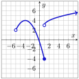

In this section, we’ll explore piecewise-defined functions, which are functions constructed from pieces of several other functions. We’ll find the domain and range of these types of functions, as well as graph, evaluate, and solve them. And given the graph of a piecewise-defined function, we’ll construct the formula for the graph’s function.
A family event charges $4/person, with a maximum of $20 for any single family.
a.
How much will a family of three pay?
b.
How much will a family of seven pay?
c.
At what number of people does the calculation change from being per person to a single charge for the whole family?
Preparation 2.
In November 2022, Portland General Electric set the rates for basic residential service as a function of the number of kilowatt-hours (kWh) of energy used. The rates in November 2022 were $0.0642/kWh when up to 1000 kWh (kilowatt-hours) are used and if greater than 1000 kWh are used, then the first 1000kWh are billed at the $0.0642/kWh rate and $0.07002/kWh is charged for the energy usage greater than the initial 1000 kWh.
a.
What is the cost for using 740 kWh?
b.
What is the cost for using 1320 kWh?
c.
What is the formula to find the cost for using \(x\) kWh if \(x\) is greater than 1000 kWh?
Exercises1.4.2Practice Exercises
Practice 1.
Let \(f(x)=
\begin{cases}
x^2-4 \amp \text{if } {-2}\leq x \lt 3\\
\frac{2}{3}x-1 \amp \text{if } x\geq 3
\end{cases}\)
A piecewise-defined function is a function which uses different formulas for calculating the output on different intervals of its domain. Each formula is used on a distinct interval of the domain.
The notation we use to write a piecewise-defined function is:
\begin{equation*}
f(x)=
\begin{cases}
\text{formula #1} \amp \textrm{if} \quad x \text{ is in this part of the domain of } f \\
\text{formula #2} \amp \textrm{if} \quad x \text{ is in this other part of the domain of } f \\
\text{etc.} \amp \textrm{if} \quad \text{etc.}
\end{cases}
\end{equation*}
The domain of the function is the union of the intervals used by the separate formulas.
Its domain is \((-5, \infty)\) and its range is \([-4,\infty)\text{.}\)

Figure1.40.\(y=f(x)\)
Exercises1.4.4Exit Exercises
Exit 1.
Use \(F(x) =
\begin{cases}
-\frac{1}{2}x^2+1 \amp \textrm{if} \quad x \leq 2 \\
-\frac{1}{2}x + 5 \amp \textrm{if} \quad x \gt 4
\end{cases}\) to answer the following.
a.
Evaluate \(F(8)\text{.}\)
b.
Evaluate \(F(-6)\text{.}\)
Exit 2.
a.
In November 2022, Portland General Electric set the rates for basic residential service to be $0.0642/kWh for up to 1000 kWh used and then $0.07002/kWh for any usage greater than 1000 kWh. Find a piecewise-defined function that gives the cost of electricity used (in dollars) as a function of \(x\text{,}\) the amount of kWh used.